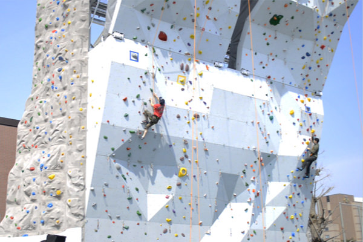
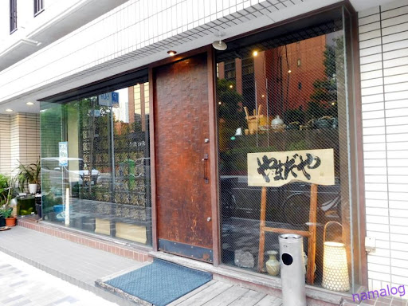
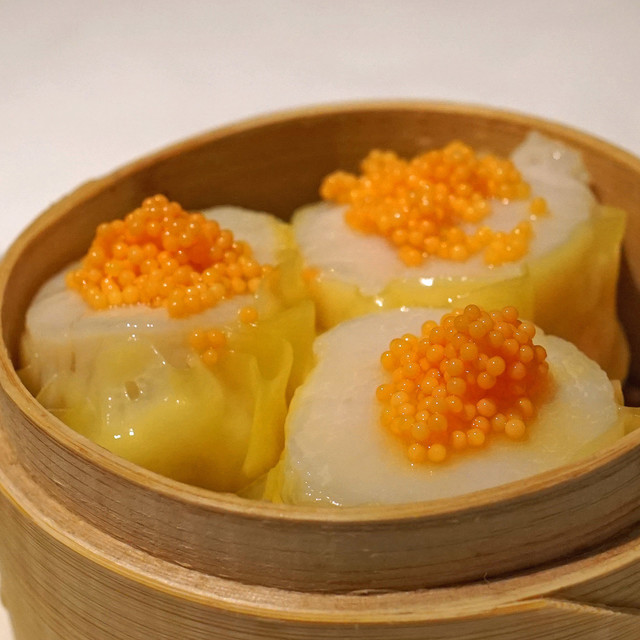
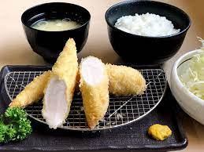

コスパの良いご飯屋さん巡りが大好きで、毎週週末はお店の開拓をしております
おすすめのご飯やさんなどあればぜひ教えてください☺
ボルダリングが好きで週末はよくボルダリングジムにもいってます
最近は命綱をつけて高い壁を登る、リードクライミングが好きでよくやっています
築地駅にある居酒屋さん、日本酒とご飯がとても美味しい、かつリーズナブルなのでとてもおすすめ
日比谷駅にある飲茶のお店。世界一美味しい飲茶だと思ってます（※当社調べ）
ささみかつが絶品のとんかつ屋さん。ささみかつがふわふわで絶品なのでぜひお試しあれ
